Welcome to my portfolio site!
I am a digital data designer and data analytics professional who graduated in May 2019 from the Parsons School of Design
in New York City (a division of The New School) with the degree of Master of Science (M.S.) in
During my studies, I took several studio classes which blended together web development,
visual design, and data storytelling. You may view a selection of my projects on this site
and hopefully enjoy the content!
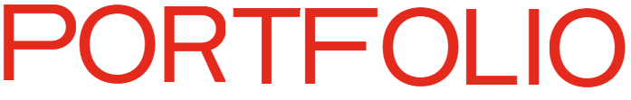
Note: Most projects were originally designed for desktop. For the best interactive experience, a large monitor is recommended.
Video presentation (6 minutes):
These projects draw from publicly available data sets and require significant data cleaning and aggregation before the visualizations could reveal the story:
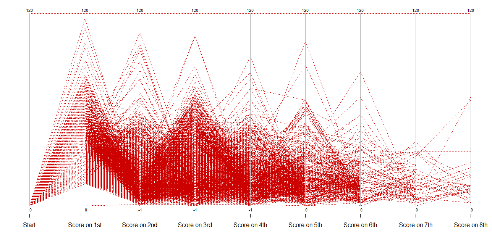
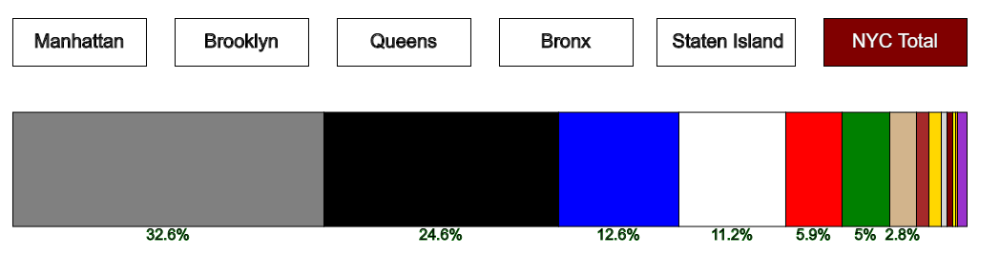
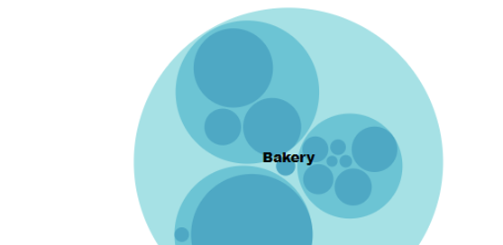
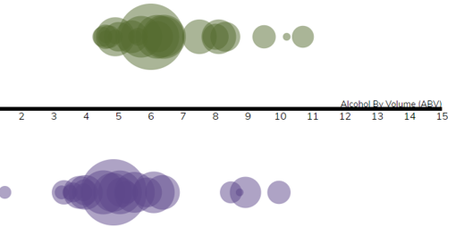
This project integrates interactive charts into a journalistic narrative:
These projects prompt the viewer to interact with the content to discover more:
TV News Word Frequency
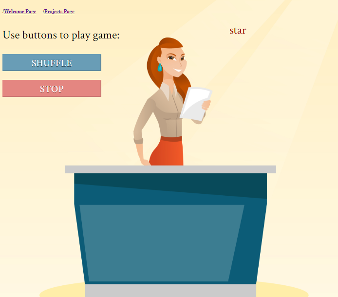
Poems from Bulgaria
in 1 Minute
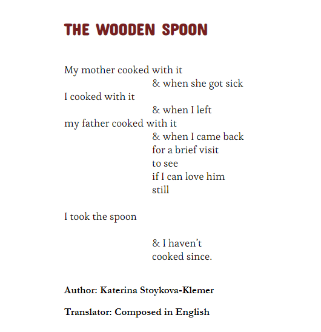
eBeerHarmony: Find Your Beer Match
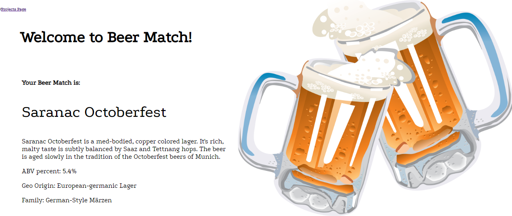
These are small creative projects that solely use typography, color, and grid composition to convey the story:
A Tree of Goals for the United Nations
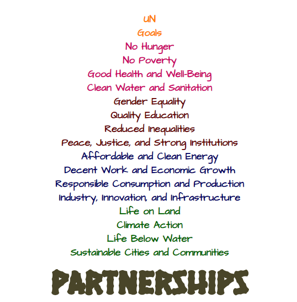
The Alphabet Gets Fashion Wings
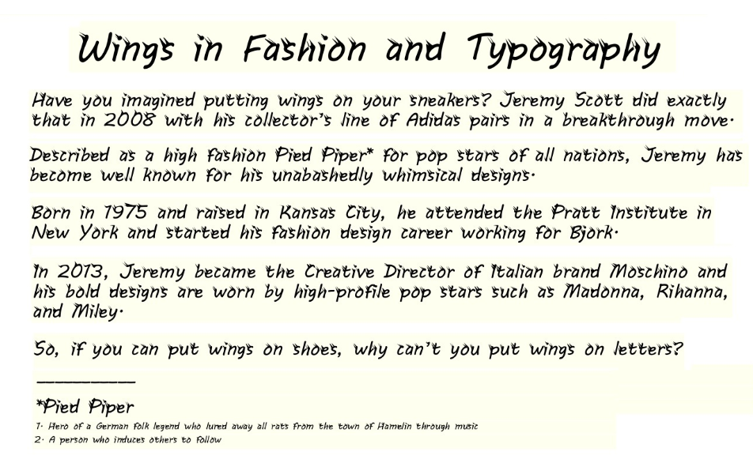
Tennis Rankings that Show it Big
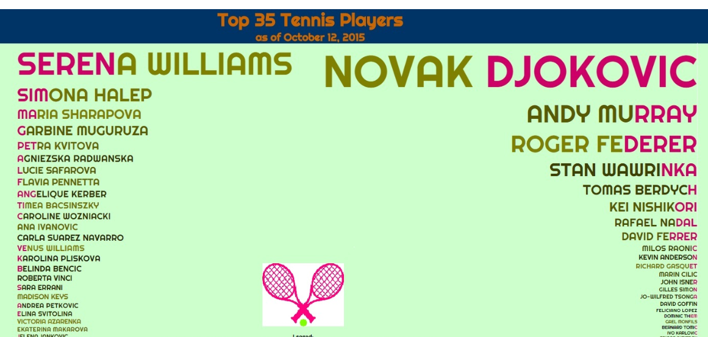
+BONUS: Watch my 34-second video "Color Theory with Superheroes"
Designed and developed by Kiril Traykov